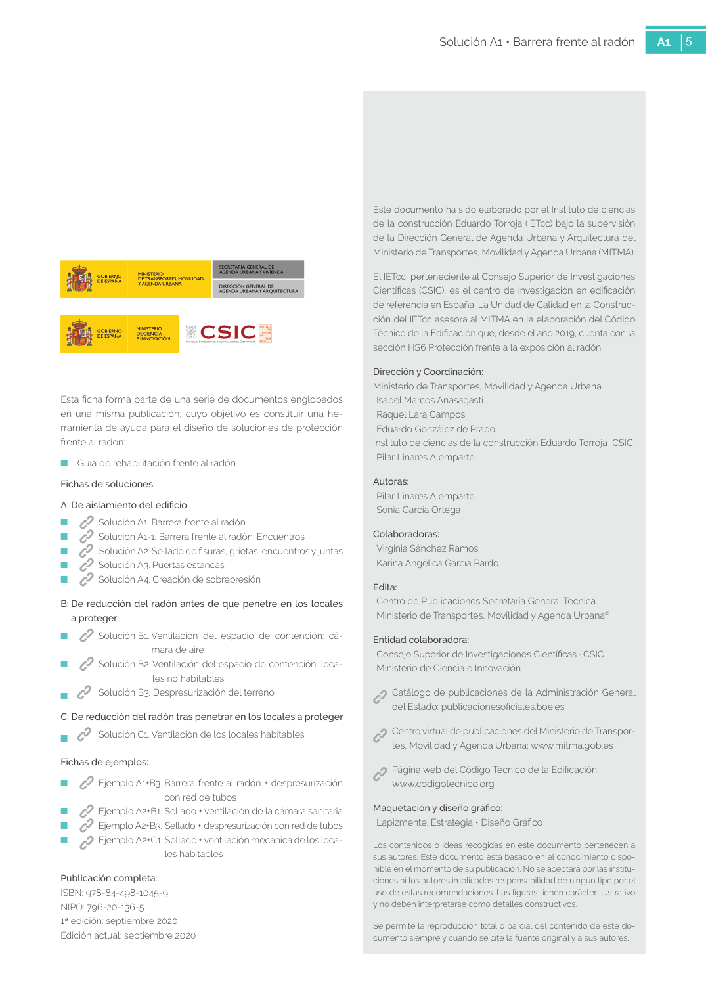

GUIA · Conservación y durabilidad de la barrera · versión sin-fecha · capa guia
Formatos: JSON compacto · Markdown · PDF fuente
Ámbito del documento · texto del ámbito · documento y tablas
Tipo: tablas, figuras · nivel 3 · sección estimada: 5 encuentro con pilar 6 encuentro con fachada · padre: a0014
Conservación y durabilidad de la barrera de la barrera Las barreras de hormigón y las láminas dispues tas en el intradós de un cerramiento podrán, res pectivamente, repararse mediante un manteni miento adecuado o sustituirse por otra de forma sencilla. En contraposición, las láminas situadas en el trasdós serán difícilmente reparables por lo que será más importante que tengan una dura bilidad adecuada a la vida útil del edificio y sus condiciones. El coste que se ha tenido en cuenta en la gráfica al comienzo de esta ficha es el correspondiente a la ins talación de una barrera de tipo lámina sobre un suelo existente, por considerar que representa el caso más común. 5 Solución A1 • Barrera frente al radón A1 5 Este documento ha sido elaborado por el Instituto de ciencias de la construcción Eduardo Torroja (IETcc) bajo la supervisión de la Dirección General de Agenda Urbana y Arquitectura del Ministerio de Transportes, Movilidad y Agenda Urbana (MITMA). El IETcc, perteneciente al Consejo Superior de Investigaciones Científicas (CSIC), es el centro de investigación en edificación de referencia en España. La Unidad de Calidad en la Construc ción del IETcc asesora al MITMA en la elaboración del Código Técnico de la Edificación que, desde el año 2019, cuenta con la

PDF fuente redistribuible: copia fiel enlazada en esta página (SHA256 verificado).